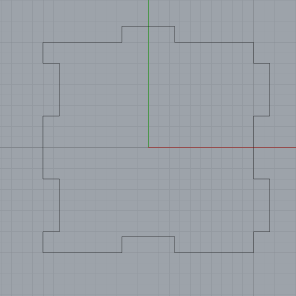
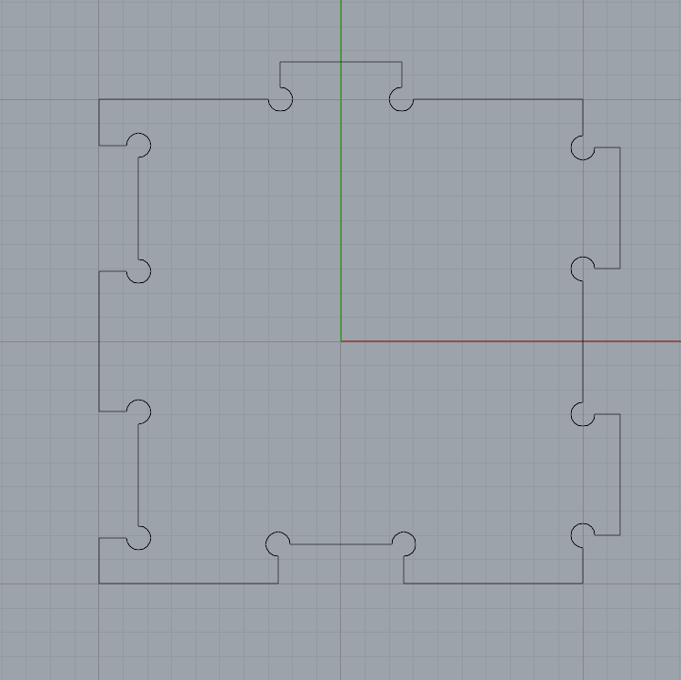

Assignment: Design and mill a box out of FR1 on the Othermill, using boxjoints, tabs, or another joining method. (Alternatively, 3D print a similar box.)
Assignment: Design and mill a box out of FR1 on the Othermill, using boxjoints, tabs, or another joining method. (Alternatively, 3D print a similar box.)
For this assignment, I elected to use the Othermill because I wanted to practice using the milling machine. I decided to make the simplest box I could think of that functioned as described.
I drafted a simple puzzle-like box side in Rhino, in the following steps:
Trim to remove extraneous paths. Repeat for the remaining pair of opposite edges of the square. How wide the tabs are can vary, but their depth should be the estimated thickness of the material (in this case, 1.54 mm.)
Offset to offset the slots to be 0.1 mm larger.Trim out a "dogbone," a circular cutout. I used circles 1mm in diameter, the width of the end mill I would be using.

I partially modeled what the box would look like assembled using an extruded version of the piece. (But only partially modeling failed to bring to my attention the need for special top and bottom pieces with this design, as I would realize later!)
I used the Rhino to KiCAD (as DXF) to Bantam Tools (as gerber) workflow. Over the course of many attempts I learned the following:
I applied as much double stick tape as I could without overlapping pieces to the bottom of my FR1 and to the bottom of the sacrificial layer of FR1. I did not measure the sandwiched FR1 and tape (mistake) but assumed a Z offset of 2mm, a distance that would ensure the sacrificial later would be cut into but not so deep as to reach the metal bed.
First attempt:
So many errors -- only half a piece, engraved, not cut out, sort of ugly!
Twelvth attempt, after learning the lessons above:
Much better! Cleanly cut, no accidental engraving, destined for participation in the box.
I used the planned offset feature in the Bantam tool software to lay out subsequent cuts on the remaining available area of the FR1:
After multiple successful milling attempts, it became clear that the sides fit together well, but I wanted to mill more pieces to be sure there wasn't an accumulation of bad tolerance errors:
However, I also realized the error of my ways -- I would need to design special top and bottom pieces for the box!
To produce the box top, I examined the way my pieces fit together and rotated my original box side design to produce a piece with the required tabs:
By the time I got to making the box bottom, I realized I could take advantage of the rotational symmetry in the required piece, which made design easier:
After milling the top and bottom pieces, I was able to produce a box that fits together snugly!
So rollable!

Big thanks to fellow first-time Othermillers John and Jillian at the MILL for the company and troubleshooting!